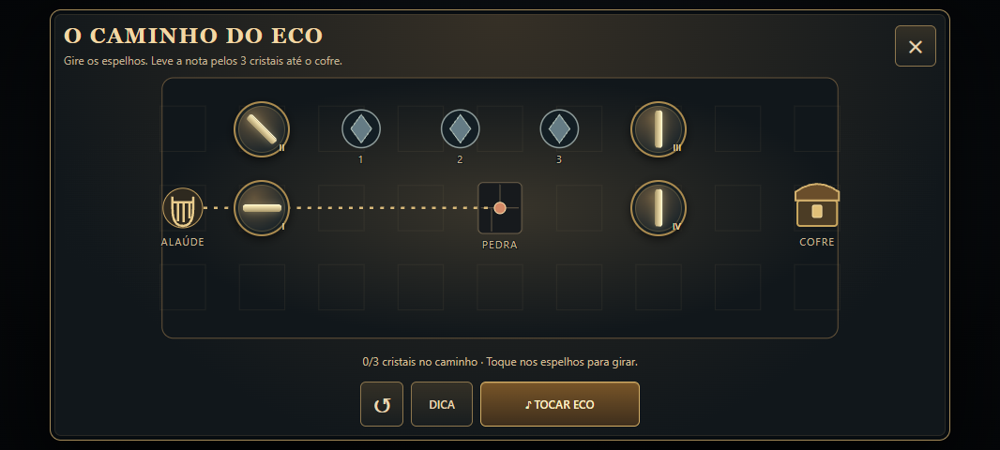
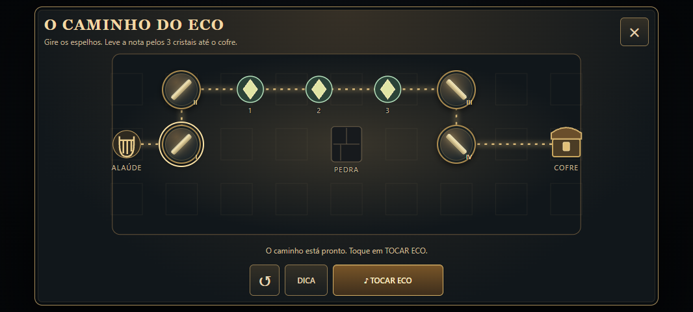
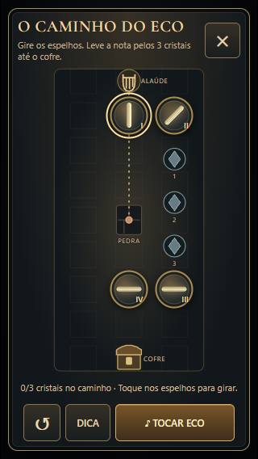

Os nove selos e a sequência de runas deram lugar a um desafio de espelhos e música: conduza a nota do alaúde pelos três cristais até o cofre.
Experimente, observe e toque
Toque nos espelhos para girá-los. A rota muda imediatamente, mostrando por onde o eco passará. Quando achar um caminho, toque em Tocar eco para enviar a nota. Os cristais respondem com luz e som — e o cofre só abre quando o percurso está completo.

Paisagem em 1066×480: tabuleiro, dica, reinício, toque e saída na mesma janela, sem rolagem.

A linha mostra a rota. A nota percorre o caminho ao tocar o eco.
Feito para a área visível do celular
A janela foi refeita para caber na tela. O tabuleiro muda de orientação junto com o aparelho, sem perder a posição dos espelhos. Os controles mantêm alvos de toque de pelo menos 44 px nas resoluções testadas.

Retrato em 320×568. O caminho gira; o progresso permanece.
Sem pressa, sem punição por tentar
Dicas ajustam um espelho por vez, sem reduzir a recompensa.
Você pode sair e continuar depois no mesmo andar.
O retorno visual permite jogar com o som desligado.
Fechar durante o teste cancela a ação; a recompensa não é duplicada.
Os mecanismos antigos ainda incompletos passam a usar o novo desafio. Cofres já concluídos continuam concluídos.
26 scripts de regressão, 1.000 sementes e sete resoluções testadas no Chrome, incluindo toque simulado, rotação, animação reduzida e recompensa única. Capturas da interface real na bancada de testes. A avaliação no aparelho físico ainda é necessária.